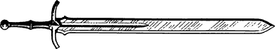
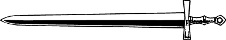
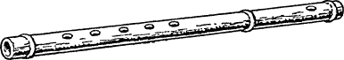
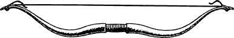
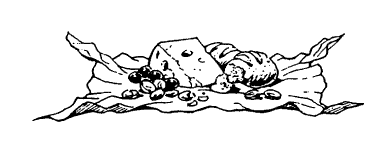
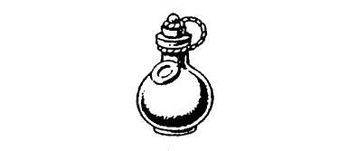

Equipment
Before you leave the Kai Monastery and begin your journey to Bor, you equip yourself with a map of Bor and its surrounding territories and a pouch of gold. To find out how much gold is in the pouch, pick a number from the Random Number Table and add 20 to the number you have picked. The total equals the number of Gold Crowns inside the pouch, and you should now enter this number in the ‘Gold Crowns’ section of your Action Chart. If you have successfully completed previous New Order adventures (Books 21–25), you may add this sum to the number of Crowns you already possess. Fifty is the maximum number of Gold Crowns you can carry in your pouch at any time. You may also select five items from the list below, only two of which may be Weapons.
- Broadsword (Weapons)

- Sword (Weapons)

- Quiver (Special Items) This contains six Arrows; record them on your Action Chart.

- Flute (Backpack Item)

- Dagger (Weapons)

- Axe (Weapons)

- Bow (Weapons)

- 2 Meals (Meals) Each Meal takes up one space in your Backpack.

- Rope (Backpack Item)

- Potion of Laumspur (Backpack Item) This potion restores 4 ENDURANCE points to your total when swallowed after combat. There is enough for only one dose.

{kind=link}
{kind=link}
{kind=link}
{kind=link}
{kind=link}
{kind=link}
List the five items that you have chosen on your Action Chart, under the appropriate headings, and make a note of any effect that they may have on your ENDURANCE points and/or COMBAT SKILL.
Kai Weapons
Upon reaching the ultimate rank of Kai Supreme Master, Lone Wolf received as a reward from the God Kai many new skills and abilities. One of these skills was Kai Weaponcraft. Using his newfound mastery, Lone Wolf forged ten weapons of magical power in the armoury furnaces of the Kai Monastery. These magical weapons are reserved for the élite of the New Order Kai who attain the rank of Grand Master.
In recognition of your rank and achievement, you may choose your own Kai Weapon from the table below or, if you prefer, you can generate one at random. To generate a Kai Weapon, pick a number from the Random Number Table and consult the first column. The magical Axe, Sword, or Broadsword which corresponds to the number you have picked will be your own personal Kai Weapon. Record this magical weapon and its unique properties in the Kai Weapon section of the Special Items List. 6
Example
Say you choose the number 1 from the Random Number Table, your Kai Weapon will be the Axe ‘Alema’.
When using this Kai Weapon in normal combat you may add +5 points to your COMBAT SKILL. Each Kai Weapon has a unique property. When you use your Kai Weapon in combat against the type of enemy that matches its unique property, or use it at the optimum time or location, then you may add the higher bonus to your COMBAT SKILL (these bonuses are not cumulative).
Example
If you were to use ‘Alema’ in combat against an undead enemy, you could add the higher bonus of +7 to your COMBAT SKILL. If you were to fight a living enemy using this weapon then the bonus to your COMBAT SKILL would remain at +5.
| Kai Weapon Table | |||||
|---|---|---|---|---|---|
| RN | Weapon Type | Weapon Name | CS | Unique Properties | CS |
| 0 | Axe | ‘Spawnsmite’ | +5 | versus reptilian enemies | +6 |
| 1 | Axe | ‘Alema’ | +5 | versus undead enemies | +7 |
| 2 | Axe | ‘Magnara’ | +5 | versus rock or stone | +8 |
| 3 | Sword | ‘Sunstrike’ | +5 | when used in daylight | +6 |
| 4 | Sword | ‘Kaistar’ | +5 | when used at night | +7 |
| 5 | Sword | ‘Valiance’ | +5 | when used against magicians or creatures born of magic | +8 |
| 6 | Sword | ‘Ulnarias’ | +5 | when used underwater | +9 |
| 7 | Broadsword | ‘Raumas’ | +5 | versus winged enemies | +6 |
| 8 | Broadsword | ‘Illuminatus’ | +5 | when used underground | +7 |
| 9 | Broadsword | ‘Firefall’ | +5 | versus fire-emitting enemies | +8 |
| RN = Random Number | CS = COMBAT SKILL | ||||
Equipment—How to use it
- Weapons
- The maximum number of Weapons that you can carry is two. Weapons aid you in combat. If you have the Grand Master Discipline of Grand Weaponmastery and a correct Weapon, it adds 5 points to your COMBAT SKILL. If you find a Weapon during your adventure, you may pick it up and use it. You may only use one Weapon at a time in combat.
- Bows and Arrows
- During your adventure there will be opportunities to use a Bow and Arrow. If you equip yourself with this Weapon, and you possess at least one Arrow, you may use it when the text of a particular section allows you to do so. The Bow is a useful Weapon, for it enables you to hit an enemy at a distance. However, a Bow cannot be used in hand-to-hand combat; therefore it is best to equip yourself also with a close combat Weapon, such as a Sword or an Axe.
In order to use a Bow you must possess a Quiver and at least one Arrow. Each time the Bow is used, erase an Arrow from your Action Chart. A Bow cannot, of course, be used if you exhaust your supply of Arrows, but the opportunity may arise during your adventure for you to replenish your stock of Arrows.
- Backpack Items
- These must be stored in your Backpack. Because space is limited, you may keep a maximum of ten articles, including Meals, in your Backpack at any one time. You may only carry one Backpack at a time. During your travels you will discover various useful items which you may decide to keep. You may exchange or discard them at any point when you are not involved in combat.
Any item that may be of use, and which can be picked up on your adventure and entered on your Action Chart, is given either initial capitals (e.g. Silver Mirror, Gold Key), or is clearly identified as a Backpack Item. Unless you are told that it is a Special Item, carry it in your Backpack.
- Special Items
- Special Items are not carried in the Backpack. When you discover a Special Item, you will be told how or where to carry it. The maximum number of Special Items that can be carried on any adventure is 12.
- Kai Weapon
- Your Kai Weapon is a Special Item and it can be carried and used in addition to two normal Weapons. If you possess the Discipline of Grand Weaponmastery for a weapon type which is the same as your unique Kai Weapon, you may add the Grand Weaponmastery bonus of +5 to your COMBAT SKILL. This is in addition to the bonus gained when you use your Kai Weapon in combat.
- Food
- Food is carried in your Backpack. Each Meal counts as one item. You will need to eat regularly during your adventure. If you do not have any food when you are instructed to eat a Meal, you will lose 3 ENDURANCE points. However, if you have chosen Grand Huntmastery as one of your five Disciplines, then you will not need to tick off a Meal when instructed to eat.
- Potion of Laumspur
- This is a healing potion that can restore 4 ENDURANCE points to your total when swallowed after combat. It cannot be used to increase ENDURANCE points immediately prior to a combat. There is enough for one dose only. If you discover any other potion during the adventure, you will be informed of its effect. All potions are Backpack Items.
- Gold Crowns
- The currency of Bor is the Ain, though Gold Crowns are readily accepted. 1 Ain equals 1 Gold Crown. These coins are always carried in the Belt Pouch. It will hold a maximum of fifty Crowns.
How Much Can You Carry?
- Weapons
- The maximum number of weapons that you may carry is two.
- Backpack Items
- These must be stored in your Backpack. Because space is limited, you may keep a maximum of ten items, including Meals, in your Backpack at any time.
- Special Items
-
Special Items are not carried in your Backpack (unless you are specifically instructed to do so). When you discover a Special Item, you will be told how to carry it.
The maximum number of Special Items that can be carried on any adventure is twelve.
- Gold Crowns
-
These are always carried in your Belt Pouch. It holds a maximum of 50 Gold Crowns. Coins of a different currency are generally smaller and lighter than Gold Crowns. They occupy less space in your Belt Pouch and therefore you can carry more of them. The national currency of Chai is the Ren. In some of the larger towns and cities of Chai, Gold Crowns are readily accepted alongside the local currency. However, this is less likely to be the case in rural areas of the country. Before you begin your adventure, you may exchange some of your Gold Crowns for Ren at the rate of 1 Gold Crown = 10 Ren. Use the following currency table to calculate the mixed currency capacity of your belt pouch:
- 1 Gold Crown = 4 Silver Lune
- 1 Gold Crown = 10 Kika
- 1 Gold Crown = 1 Noble
- 1 Gold Crown = 10 Ren
- 1 Gold Crown = 4 Sheasu Torq
- 1 Gold Crown = 2 Orla
- 1 Gold Crown = 1 Ain
- Food
- Food is carried in your Backpack. Each Meal counts as one Backpack Item.
Any item that may be of use and can be kept during your adventure and recorded on your Action Chart is given initial capital letters (e.g. Gold Dagger, Magic Pendant) in the text. Unless you are told it is a Special Item, carry it in your Backpack.
Footnotes
[6] If you have completed any of the previous Lone Wolf New Order adventures (Books 21+), you already possess a Kai Weapon.